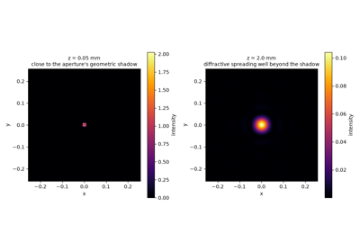
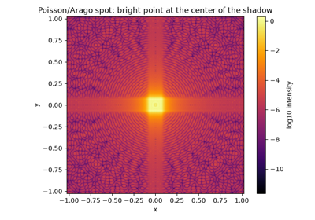
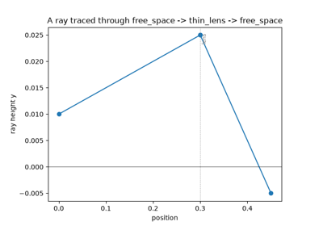
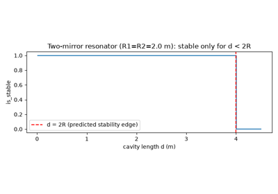
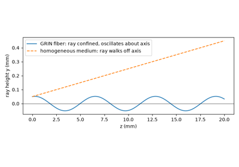
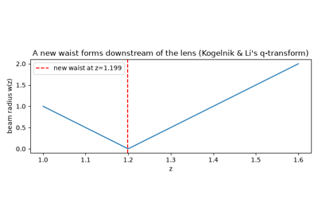
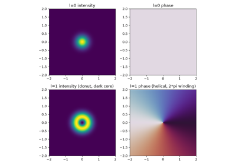

Breakthroughs in Optics#
“Each little region of a luminous body, such as the Sun, a candle, or a burning coal, generates its own waves of which that point is the centre.” – Christiaan Huygens, Treatise on Light, 1690
Optics is the oldest branch of physics to have been fully overtaken, not
once but twice, by a change of underlying picture: a ray theory gave way
to a wave theory, and a wave theory gave way to a quantum one, with each
older picture surviving as a limit of the next. physicskit.optics
is organized around exactly that layering – ray-transfer (ABCD) matrix
optics, scalar diffraction and Gaussian-beam wave optics, and the quantum
theory of light – because each layer is still the right tool for the
regime it was built for. This chronology traces the major conceptual
breakthroughs behind the package, from Huygens’ 1690 wave construction to
the 1992 discovery that light can carry orbital angular momentum. Every
stop has a pointer to the corresponding implementation in this package, a
structural diagram of the system it describes, and a short, runnable
example reproducing the milestone’s signature observable.
1690 – Huygens’ Wave Principle#
Christiaan Huygens proposed, in his Traite de la Lumiere, that light is not a stream of particles but a disturbance propagating through a medium, and that every point on an advancing wavefront can itself be treated as the source of a new spherical secondary wavelet. The envelope of all those secondary wavelets a moment later reconstructs the propagated wavefront – a purely geometric construction that, without any equation for the wave itself, correctly predicted rectilinear propagation, reflection, and (with some difficulty) refraction and double refraction in calcite. Augustin-Jean Fresnel would later supply the missing ingredient, interference between the wavelets, turning Huygens’ construction into a quantitative theory of diffraction.
Implementation: physicskit.optics.wave.angular_spectrum_propagate()
numerically realizes the Huygens picture in its modern form – every
point of a source field \(U_0\) re-radiates, and interference among
all those secondary contributions reconstructs the propagated field
\(U(x, y, z)\) at the next plane.
References: C. Huygens, Traité de la Lumière (Leiden, 1690; written 1678). A book-length treatise, not a journal article – there is no journal or DOI to cite.

Huygens’ wavelets: diffractive spreading of a pinhole
1803 – Young’s Double-Slit Experiment#
Thomas Young had argued, in his 1801 Bakerian Lecture “On the Theory of Light and Colours” (published 1802), that light must be a wave capable of interference – but that lecture was a conceptual argument, not a quantitative demonstration. The fringe-forming experiment now known as “Young’s double-slit experiment” appears in his later, 1803 Bakerian Lecture, “Experiments and Calculations Relative to Physical Optics” (published 1804), where Young described light from a single aperture dividing into two beams that recombine to produce a pattern of alternating bright and dark fringes on a distant screen – a pattern only explicable if light is a wave capable of constructive and destructive interference. (Young’s own apparatus was almost certainly not a literal pair of slits cut in an opaque plate: contemporary accounts and later historical reconstructions describe sunlight passed through a small hole and then divided by the edge of a card, or by a fine hair, into two overlapping beams acting as coherent virtual sources. The tidy “two-slit plate” picture used here and in most modern treatments is a later pedagogical simplification of that messier original setup.) Where two path lengths \(r_1\) and \(r_2\) from the two sources to an observation point differ by an integer number of wavelengths, the waves reinforce; where they differ by a half-integer number, they cancel:
The experiment was the first direct, quantitative evidence against the Newtonian corpuscular theory of light that had dominated optics for over a century, and it remains the canonical demonstration of wave interference – revived a century and a half later, one particle at a time, as a demonstration of quantum superposition itself.
Implementation: physicskit.optics.wave.double_slit_aperture()
constructs exactly this two-slit transmission mask, and
physicskit.optics.wave.fraunhofer_diffraction() propagates it to
the far field, reproducing Young’s fringe pattern as a computed
intensity() distribution. Rather than
jumping straight to that far-field limit,
physicskit.optics.visualizers.animate_diffraction_propagation()
steps angular_spectrum_propagate() through
a whole sequence of propagation distances \(z\), animating the two
slits’ near-field wavefronts as they visibly develop into Young’s
far-field interference fringes – the fringe pattern shown to be a limit
of continuous propagation, not a separate calculation. See it in
Young’s double-slit fringes.
References: T. Young, “The Bakerian Lecture: Experiments and Calculations Relative to Physical Optics,” Phil. Trans. R. Soc. Lond. 94, 1-16 (1804) – the paper that actually contains the quantitative fringe experiment described above. It is often conflated with Young’s earlier, purely conceptual Bakerian Lecture, “On the Theory of Light and Colours,” Phil. Trans. R. Soc. Lond. 92, 12-48 (1802).
1818 – Fresnel’s Diffraction Theory#
Augustin-Jean Fresnel submitted a prize memoir to the French Academy of Sciences that combined Huygens’ wavelet construction with Young’s principle of interference, giving diffraction a quantitative mathematical foundation for the first time. Fresnel’s theory predicts the field diffracted by an aperture \(U_0(x_0, y_0)\) at a finite propagation distance \(z\) as a superposition of spherical wavelets weighted by a quadratic-phase kernel,
which reduces to simple rectilinear shadows at short range and to Young’s far-field interference pattern as \(z \to \infty\). Famously, Simeon Poisson pointed out – intending it as a reductio ad absurdum – that Fresnel’s own theory predicted a bright spot at the center of the shadow of a circular obstacle; Francois Arago promptly observed the “Poisson spot” in the laboratory, turning a supposed refutation into the theory’s most dramatic confirmation.
Implementation: physicskit.optics.wave.fresnel_diffraction()
implements this near-field quadratic-phase propagator directly, while
physicskit.optics.wave.circular_aperture() and
single_slit_aperture() provide the
canonical apertures – including the circular obstacle whose diffracted
field reproduces the Poisson/Arago spot – with
fraunhofer_diffraction() as the far-field
limit and intensity() recovering the
observable pattern.
References: A. J. Fresnel, “Mémoire sur la diffraction de la lumière,” prize memoir, Académie des Sciences (submitted 1818, awarded the prize 1819, not printed until 1826), published in Mémoires de l’Académie Royale des Sciences 5 (1826) – the publication history is genuinely tangled, spanning eight years between submission and print.

Fresnel diffraction and the Poisson/Arago spot
1835 – Airy’s Diffraction Pattern and the Diffraction Limit#
George Biddell Airy worked out the exact Fraunhofer diffraction pattern of a circular aperture – such as a telescope objective or the pupil of the eye – finding a bright central disk surrounded by faint concentric rings, rather than the sharp geometric image predicted by ray optics. Four decades later Lord Rayleigh turned Airy’s pattern into a practical resolving-power criterion: two point sources are just resolvable when the central peak of one Airy pattern falls on the first dark ring of the other. Together, Airy’s pattern and Rayleigh’s criterion established that no optical instrument, however perfectly made, can resolve detail finer than a limit set purely by the wavelength of light and the aperture’s size – the diffraction limit that still bounds every microscope, telescope, and camera lens.
where \(D\) is the aperture diameter, \(J_1\) the first-order Bessel function of the first kind, and \(\theta_{\min}\) the Rayleigh angular resolution limit set by the first zero of \(J_1\).
Implementation: physicskit.optics.wave.circular_aperture() and
physicskit.optics.wave.fraunhofer_diffraction() reproduce the Airy
pattern directly from a numerical Fourier transform – no closed-form
Bessel function is needed – and its first dark ring lands exactly at the
Rayleigh angle \(1.22\,\lambda/D\) computed independently.
References: G. B. Airy, “On the Diffraction of an Object-glass with a Circular Aperture,” Trans. Cambridge Phil. Soc. 5, 283-291 (1835). Rayleigh criterion: Lord Rayleigh, “Investigations in optics, with special reference to the spectroscope,” Phil. Mag. Series 5, 8, 261-274, 403-411, 477-486 (1879).
1841 – Gauss’s Theory of Optical Systems: The ABCD Matrix Formalism#
Carl Friedrich Gauss, in his Dioptrische Untersuchungen, showed that any centered optical system – however many lenses and refracting surfaces it contains – can be fully characterized in the paraxial approximation by a handful of cardinal points, and that tracing a ray through it reduces to linear algebra rather than surface-by-surface trigonometry. Gauss’s insight is the direct ancestor of the modern \(2\times 2\) ray-transfer (“ABCD”) matrix formalism: every elementary optical element – a gap of free space, a lens, a curved interface, a mirror – is a linear map on the ray state, and a compound system’s matrix is simply the ordered product of its elements’ matrices.
where \(y\) is a ray’s height above the optical axis, \(\theta\) its (paraxial, small-angle) inclination, and \(M_1, \ldots, M_n\) the elementary matrices in the order light encounters them.
Implementation: every function in physicskit.optics.ray –
free_space(),
thin_lens(),
curved_interface(), and the rest – returns
one elementary Gauss/ABCD matrix, and
physicskit.optics.ray.OpticalSystem.system_matrix() multiplies them
in traversal order, exactly Gauss’s composition rule.
References: C. F. Gauss, Dioptrische Untersuchungen, Abhandlungen der Königlichen Gesellschaft der Wissenschaften zu Göttingen (read Dec. 1840; published 1841) – exact volume and page not independently verified.

Gauss’s ABCD formalism: a composite system as a matrix product
1865 – Maxwell’s Electromagnetic Theory of Light#
James Clerk Maxwell unified electricity, magnetism, and light into a single field theory, showing that his equations for the electric and magnetic fields admit transverse wave solutions propagating at a speed fixed entirely by two constants measured in unrelated electrical and magnetic experiments, \(c = 1/\sqrt{\mu_0\varepsilon_0}\) – a speed that agreed, to the accuracy of the day, with the independently measured speed of light. Maxwell concluded that light itself must be an electromagnetic disturbance, replacing the mechanical “luminiferous ether” wavelets of Huygens and Fresnel with oscillating electric and magnetic fields as the thing that actually waves. In source-free, linear, non-dispersive media, each Cartesian component of the field obeys the same scalar wave equation,
whose monochromatic (single-frequency) solutions reduce to the Helmholtz equation \((\nabla^2 + k^2)E = 0\) underlying every scalar diffraction calculation. Maxwell’s theory did not overturn Fresnel’s wave optics so much as explain, for the first time, what was actually waving.
Connection: physicskit.optics.wave works entirely in the scalar
regime this equation licenses –
physicskit.optics.wave.angular_spectrum_propagate(),
fresnel_diffraction(), and
fraunhofer_diffraction() all solve the
monochromatic Helmholtz equation that follows directly from Maxwell’s
wave equation for a single transverse field component; the package does
not carry the full vector field or polarization degrees of freedom that
Maxwell’s theory adds on top of the earlier scalar wave picture.
References: J. C. Maxwell, “A Dynamical Theory of the Electromagnetic Field,” Phil. Trans. R. Soc. Lond. 155, 459-512 (1865).
Fresnel diffraction and the Poisson/Arago spot
1905 – Einstein’s Light-Quantum Hypothesis#
Albert Einstein proposed that light itself, not merely the matter it interacts with, is quantized: an electromagnetic wave of frequency \(\nu\) behaves, in its interaction with matter, as if it were composed of discrete, localized quanta each carrying energy \(E = h\nu\) (later named “photons” by Gilbert Lewis in 1926). Einstein used the hypothesis to explain three features of the photoelectric effect that a continuous Maxwellian wave cannot – a sharp threshold frequency below which no electrons are ejected regardless of intensity, an ejected-electron kinetic energy that depends on frequency but not intensity, and effectively instantaneous emission – via the simple energy balance
where \(W\) is the material’s work function. A century after Young’s double-slit experiment had seemingly settled the matter in favor of a purely wave picture, Einstein’s light quanta reopened it, forcing physics toward the wave-particle duality that would only be reconciled by full quantum electrodynamics – and it was this work, not relativity, that his 1921 Nobel Prize citation named explicitly.
Implementation: physicskit.optics.quantum_optics.fock_state()
constructs the number state \(\lvert n\rangle\), the modern,
fully quantum-mechanical descendant of Einstein’s discrete light quanta:
a state of definite photon number \(n\), rather than a continuous
classical field amplitude.
References: A. Einstein, “Über einen die Erzeugung und Verwandlung des Lichtes betreffenden heuristischen Gesichtspunkt,” Ann. Phys. 322(6), 132-148 (1905).

Kimble, Dagenais, and Mandel: photon antibunching and the Fano factor
1927 – Dirac’s Quantization of the Electromagnetic Field#
Paul Dirac gave the first fully quantum-mechanical treatment of radiation, promoting each mode of the electromagnetic field from a classical oscillator to a quantum harmonic oscillator described by non-commuting annihilation and creation operators, \(\hat a\) and \(\hat a^\dagger\), satisfying \([\hat a, \hat a^\dagger] = 1\). Photon number becomes the oscillator’s excitation number, \(\hat n = \hat a^\dagger \hat a\), with \(\hat a\) and \(\hat a^\dagger\) respectively removing and adding one quantum of the field – exactly the ladder structure Einstein’s 1905 light quanta had implied but never derived from a dynamical theory. Dirac’s theory was also the first to derive the rate of spontaneous emission from first principles, rather than inserting it by hand as Einstein’s 1917 “A coefficient” had done, by showing that an atom in an excited state is never truly isolated from the quantized vacuum field. The formalism became the direct ancestor of quantum electrodynamics and of the whole operator-based apparatus of modern quantum optics.
Implementation:
physicskit.quantum.core.operators.annihilation_operator() and
creation_operator() build
\(\hat a\) and \(\hat a^\dagger\) directly as matrices on a
truncated Fock basis, and are the operators every quantum-optical
construction in this package is built from –
physicskit.optics.quantum_optics.squeezed_state() exponentiates
them into squeezing and displacement operators, and
physicskit.optics.quantum_optics.JaynesCummingsModel.hamiltonian()
uses them to build the field part of the Jaynes-Cummings Hamiltonian.
References: P. A. M. Dirac, “The Quantum Theory of the Emission and Absorption of Radiation,” Proc. R. Soc. A 114(767), 243-265 (1927).

Dirac’s quantization of the electromagnetic field: ladder operators
1932 – Wigner’s Phase-Space Distribution#
Eugene Wigner introduced a quasi-probability distribution \(W(x, p)\) that represents a quantum state jointly over position and momentum, reproducing the correct marginal probability densities \(\int W(x,p)\,dp = |\psi(x)|^2\) and \(\int W(x,p)\,dx = |\tilde\psi(p)|^2\) upon integration along either axis, while permitting negative values elsewhere – a signature that has no classical phase-space analogue. Wigner built the distribution to correct the classical (Boltzmann) expression for thermodynamic equilibrium, but it was later adopted wholesale by quantum optics as the natural way to visualize a light field’s quantum state: a coherent state appears as a positive Gaussian centered away from the origin, while genuinely nonclassical states such as Fock states and squeezed light develop negative regions or non-Gaussian structure that no classical statistical mixture of light could produce.
Implementation: physicskit.optics.quantum_optics.compute_wigner_function()
evaluates \(W(x, p)\) on a phase-space grid for an arbitrary Fock-basis
state vector, and wigner_negativity()
quantifies the negative volume that marks a state as nonclassical.
References: E. Wigner, “On the Quantum Correction For Thermodynamic Equilibrium,” Phys. Rev. 40, 749-759 (1932).

Wigner’s phase-space distribution: negativity of a Fock state
1956 – The Hanbury Brown-Twiss Effect#
Robert Hanbury Brown and Richard Q. Twiss showed, first in a laboratory test and then astronomically on the star Sirius, that the intensities of light measured at two separated detectors are correlated even when no phase information is preserved between them – a technique that let them measure a stellar angular diameter far too small for a conventional (amplitude-interferometric) telescope to resolve, by correlating photocurrent fluctuations rather than field amplitudes directly. Their intensity-interferometry technique amounted to measuring the second-order (intensity) correlation function of the light field, now written \(g^{(2)}(\tau)\), and finding it bunched above the classical coherent-state value for the thermal (chaotic) starlight they studied,
The result was controversial at the time – it seemed to imply individual photons were somehow correlating with each other across independent detectors – but it was fully explained, within a few years, by the classical statistics of a fluctuating chaotic field, and later by Glauber’s full quantum theory of coherence. It was this same \(g^{(2)}\) correlation function, in its sub-unity, non-classical form, that Kimble, Dagenais, and Mandel measured in resonance fluorescence two decades later.
Connection: the photon-number-distribution tools
physicskit.optics.quantum_optics.fock_state() and
coherent_state() provide the two
limiting cases against which any measured \(g^{(2)}(0)\) – bunched,
Poissonian, or antibunched – is compared; see the 1977 Kimble, Dagenais,
and Mandel entry below, where the same photon statistics are used to
compute the Fano factor for the antibunched, sub-Poissonian regime that
Hanbury Brown and Twiss’s bunched, super-Poissonian starlight sits on the
opposite side of.
References: R. Hanbury Brown and R. Q. Twiss, “Correlation between Photons in two Coherent Beams of Light,” Nature 177, 27-29 (1956); “A Test of a New Type of Stellar Interferometer on Sirius,” Nature 178, 1046-1048 (1956).

The Hanbury Brown-Twiss effect: bunching, coherent, and antibunched light
1960 – Maiman’s First Ruby Laser#
Theodore Maiman built and operated the first working laser at Hughes Research Laboratories, using a synthetic ruby rod as the gain medium, pumped by a helical flashlamp, inside a resonator formed by silvering the rod’s own polished end faces. The demonstration, reported in a short 1960 Nature paper after being turned down by Physical Review Letters, proved that Einstein’s 1917 concept of stimulated emission could be harnessed to produce a coherent, directional, monochromatic beam of light – and set off a race to build lasers from every gain medium and resonator geometry imaginable. This package does not model laser gain media or population inversion, but the resonator that made Maiman’s ruby crystal lase, two mirrors bounding an amplifying medium, is precisely the kind of optical cavity that ray-transfer matrix theory was soon developed to analyze.
Connection: physicskit.optics.ray.spherical_mirror() and
physicskit.optics.ray.cavity_round_trip_matrix() build the ABCD
round-trip matrix of a two-mirror resonator like Maiman’s, and
physicskit.optics.ray.cavity_stability() (equivalently,
physicskit.optics.ray.OpticalSystem.stability_parameter and
is_stable()) tests whether
such a cavity traps light indefinitely rather than walking rays out of
the resonator.
References: T. H. Maiman, “Stimulated Optical Radiation in Ruby,” Nature 187, 493-494 (1960).

Two-mirror resonator stability (Maiman’s ruby laser cavity)
1963 – Glauber’s Quantum Theory of Optical Coherence#
Roy Glauber put the quantum theory of light on a firm operational footing, defining coherence through normally ordered correlation functions of the field operators rather than through classical field amplitudes, and identifying the coherent states \(|\alpha\rangle\) – eigenstates of the annihilation operator, \(\hat a |\alpha\rangle = \alpha |\alpha\rangle\) – as the quantum states that most closely reproduce a classical, stable-amplitude light wave. Expanded in the number (Fock) basis, a coherent state carries a Poissonian photon-number distribution,
the quantum-mechanical signature of what an ideal, shot-noise-limited laser beam actually is. Glauber’s 1963 papers established the theoretical vocabulary, correlation functions of arbitrary order, photon statistics, coherent-state phase space, that the entire field of quantum optics has used ever since, and earned him a share of the 2005 Nobel Prize in Physics.
Implementation: physicskit.optics.quantum_optics.coherent_state()
constructs \(|\alpha\rangle\) directly in a truncated Fock basis, for
use with compute_wigner_function()
and any of the package’s other state-based quantum-optics tools.
References: R. J. Glauber, “The Quantum Theory of Optical Coherence,” Phys. Rev. 130, 2529-2539 (1963); “Coherent and Incoherent States of the Radiation Field,” Phys. Rev. 131, 2766-2788 (1963).

Glauber’s coherent states: displaced vacuum, Poissonian statistics
1963 – The Jaynes-Cummings Model#
Edwin Jaynes and Fred Cummings introduced the minimal fully quantum model of light-matter interaction: a single two-level atom coupled to a single quantized cavity mode, originally to test whether the semiclassical theory of the maser (a quantized atom driven by a classical field) agreed with a theory in which the field itself is quantized. The Jaynes-Cummings Hamiltonian,
is exactly solvable, and it predicted a phenomenon with no semiclassical counterpart at all: even with the atom initially excited and the field in vacuum, the excited-state population oscillates coherently at the vacuum Rabi frequency \(2g\), and for a field prepared in a Fock or coherent state, the oscillations periodically collapse and then revive, direct evidence of the discreteness of the photon number. The model became the theoretical backbone of cavity and circuit quantum electrodynamics decades later.
Implementation: physicskit.optics.quantum_optics.JaynesCummingsModel
builds \(\hat H\) via hamiltonian(),
evolve()
propagates an initial atom-field state under it, and
excited_state_population()
reproduces the vacuum Rabi oscillations and collapse-and-revival dynamics
directly.
References: E. T. Jaynes and F. W. Cummings, “Comparison of Quantum and Semiclassical Radiation Theories with Application to the Beam Maser,” Proc. IEEE 51, 89-109 (1963).

The Jaynes-Cummings model: vacuum Rabi oscillation and collapse-and-revival
1966 – Kao’s Low-Loss Optical Fiber and Graded-Index Guiding#
Charles K. Kao and George Hockham, at Standard Telecommunication Laboratories, argued against the received wisdom of the day that the roughly 1000 dB/km attenuation of contemporary glass fiber was an impurity problem rather than a fundamental limit, and that fibers could in principle be purified below 20 dB/km – a threshold Corning’s Kapron, Keck, and Maurer reached just four years later. Kao’s insight launched the fiber-optic communications industry that now carries essentially all long-distance data traffic, and earned him half of the 2009 Nobel Prize in Physics “for groundbreaking achievements concerning the transmission of light in fibers for optical communication.” The graded-index (GRIN) fiber profile that followed guides light by continuously bending rays back toward the core axis, rather than by a single sharp core-cladding interface.
where \(n_0\) is the on-axis refractive index and \(n_2\) the quadratic index-gradient coefficient that determines how tightly rays are confined about the fiber axis.
Implementation: physicskit.optics.ray.grin_medium() builds the
ABCD matrix of exactly this quadratic-index profile; chaining it through
OpticalSystem and calling
trace_ray() reproduces the
sinusoidal, self-confining ray trajectory of a graded-index fiber.
References: K. C. Kao and G. A. Hockham, “Dielectric-fibre surface waveguides for optical frequencies,” Proc. IEE 113(7), 1151-1158 (1966).

Graded-index fiber guiding (Kao’s low-loss optical fiber)
1966 – Kogelnik and Li: Gaussian Beams and Laser Resonators#
In the years after Maiman’s laser, it became clear that real laser beams are neither idealized geometric rays nor infinite plane waves, but Gaussian beams: transversely confined fields whose amplitude falls off as \(\exp(-r^2/w^2)\) and whose wavefronts curve smoothly from diverging, to flat at a waist, to diverging again. Herwig Kogelnik and Tingye Li, in their 1966 Applied Optics paper “Laser Beams and Resonators,” showed that a Gaussian beam is completely characterized by one complex parameter,
and, crucially, that \(q\) transforms through any sequence of lenses, mirrors, or free-space sections by the same ABCD ray-transfer matrix already in use for geometric rays, \(q' = (Aq + B)/(Cq + D)\). This single result unified ray optics and Gaussian-beam wave optics under one formalism, and turned the design of a stable laser resonator, exactly the kind of cavity Maiman had built by trial and error, into a matrix eigenvalue problem: a resonator is stable precisely when repeated round trips leave \(q\) converging to a self-consistent value.
Implementation: physicskit.optics.ray.OpticalSystem and its
system_matrix(),
trace_ray(), and
is_stable() implement the ABCD
side of Kogelnik and Li’s synthesis, built from elements such as
free_space(), thin_lens(),
and curved_interface(); the complex-beam-parameter
side is implemented by physicskit.optics.gaussian.propagate_q() and
q_to_beam_params(), and by
physicskit.optics.gaussian.GaussianBeam, whose
rayleigh_range,
waist(),
radius_of_curvature(),
gouy_phase(), and
q_parameter() reconstruct
\(q(z)\) and its physical content at any plane.
References: H. Kogelnik and T. Li, “Laser Beams and Resonators,” Appl. Opt. 5(10), 1550-1567 (1966) (also Proc. IEEE 54, 1312-1329, 1966).

Kogelnik and Li: focusing a Gaussian beam through a thin lens
1977 – Kimble, Dagenais, and Mandel: Photon Antibunching#
H. Jeff Kimble, Mario Dagenais, and Leonard Mandel, studying resonance fluorescence from a beam of sodium atoms, measured the first direct evidence that light can arrive one photon at a time, with a vanishing probability of detecting two photons simultaneously – the intensity-correlation function \(g^{(2)}(0)\) dropping below the coherent-state (laser) value of exactly 1. No classical wave, however dim, can produce \(g^{(2)}(0) < 1\); the observation was the first direct proof that individual photodetection events cannot be explained by fluctuating classical intensity alone, only by the discreteness of the quantized field – the photon-counting counterpart to Glauber’s 1963 coherence theory and a direct precursor of single-photon-source technology.
where the Fano factor \(F\) equals 1 for a Poissonian (coherent, classical-limit) source and 0 for a number (Fock) state – the fully antibunched, sub-Poissonian extreme that Kimble, Dagenais, and Mandel’s photon-counting statistics approached.
Implementation: physicskit.optics.quantum_optics.fock_state() and
physicskit.optics.quantum_optics.coherent_state() give the two
limiting photon-number distributions \(|\psi_n|^2\) directly, from
which the Fano factor is computed as an ordinary first/second moment;
compute_wigner_function() shows
the same two states’ qualitatively different phase-space shapes – a
rotationally symmetric ring for the fully antibunched Fock state versus a
displaced Gaussian blob for the classical-limit coherent state.
References: H. J. Kimble, M. Dagenais, and L. Mandel, “Photon Antibunching in Resonance Fluorescence,” Phys. Rev. Lett. 39, 691-695 (1977).
Kimble, Dagenais, and Mandel: photon antibunching and the Fano factor
1985 – Observation of Squeezed Light#
Richard Slusher and coworkers at Bell Laboratories produced the first experimentally observed squeezed state of light, generated by four-wave mixing in an optical cavity containing sodium atoms. A coherent state divides the quantum uncertainty of the electromagnetic field equally between two conjugate quadratures, each sitting at the Heisenberg-limited minimum; a squeezed state redistributes that uncertainty unequally, reducing the noise in one quadrature below the vacuum (shot-noise) limit at the unavoidable cost of increasing it in the other, while the uncertainty product itself remains bounded below. Slusher et al. measured a noise reduction of about 0.3 dB below the shot-noise level in one quadrature, a modest number by later standards but a decisive proof of principle: nonclassical light with sub-vacuum noise in an observable quantity could be made in the laboratory, opening the path to squeezed-light-enhanced interferometry now used in gravitational-wave detectors such as LIGO.
Implementation: physicskit.optics.quantum_optics.squeezed_state()
constructs a squeezed (or squeezed-coherent) state from a squeezing
parameter \(\xi\) and displacement \(\alpha\) in a truncated Fock
basis; its quadrature-asymmetric, sub-vacuum noise character is directly
visible in the elliptical, non-circular contours produced by
compute_wigner_function() when
applied to its state vector.
References: R. E. Slusher, L. W. Hollberg, B. Yurke, J. C. Mertz, and J. F. Valley, “Observation of Squeezed States Generated by Four-Wave Mixing in an Optical Cavity,” Phys. Rev. Lett. 55, 2409-2412 (1985).

Slusher et al.: squeezed light and sub-vacuum quadrature noise
1990 – Siegman’s \(M^2\) Beam-Quality Factor#
Real laser beams are never perfectly diffraction-limited fundamental Gaussian modes: multimode content, aberrations, and gain-medium imperfections all make them diverge faster than an ideal beam of the same waist. Anthony Siegman showed that essentially every real laser beam’s second-moment width still propagates by the same functional form as an ideal Gaussian beam, provided the Rayleigh range is rescaled by one dimensionless “beam propagation factor” \(M^2 \geq 1\). This turned beam quality into a single, instrument-measurable number that became the ISO 11146 standard and the standard laser-beam-quality specification on essentially every commercial laser data sheet since.
where \(M^2 = 1\) recovers the ideal diffraction-limited Gaussian beam exactly, while \(M^2 > 1\) describes real, non-ideal beams with the same waist but faster divergence.
Implementation: physicskit.optics.gaussian.m2_beam_waist()
implements this rescaled-Rayleigh-range beam envelope directly, reducing
to physicskit.optics.gaussian.GaussianBeam.waist() at
\(M^2 = 1\).
References: A. E. Siegman, “New Developments in Laser Resonators,” Proc. SPIE 1224, 2-14 (1990) – the page range is lower-confidence than the other citations in this chronology and should be checked against the original proceedings volume.
1992 – Allen et al.: Orbital Angular Momentum of Light#
Les Allen, Marco Beijersbergen, R. J. C. Spreeuw, and J. P. Woerdman, at Leiden University, showed that Laguerre-Gaussian light modes carrying a helical (spiral) phase front \(e^{il\phi}\) possess a well-defined orbital angular momentum of \(l\hbar\) per photon – an intrinsic, mechanical property of light entirely separate from the spin angular momentum carried by polarization, and one that had gone essentially unrecognized for a century of optics. The discovery opened the field of structured light and optical vortices, with applications from optical tweezers that mechanically spin trapped particles, to high-capacity free-space and fiber communication links that multiplex many mutually orthogonal \(l\) channels on a single beam.
where \(l\) is the azimuthal (orbital) mode index whose helical phase \(e^{il\phi}\) – winding \(2\pi l\) around the beam axis – is the direct signature of the carried orbital angular momentum, and \(p\) the radial mode index.
Implementation: physicskit.optics.gaussian.laguerre_gaussian_mode()
constructs \(u_{l,p}(r,\phi,z)\) directly, reproducing both the
doughnut-shaped, on-axis-dark intensity profile and the helical phase
front that carries the orbital angular momentum.
References: L. Allen, M. W. Beijersbergen, R. J. C. Spreeuw, and J. P. Woerdman, “Orbital angular momentum of light and the transformation of Laguerre-Gaussian laser modes,” Phys. Rev. A 45, 8185-8189 (1992).

Allen et al.: orbital angular momentum of a Laguerre-Gaussian vortex